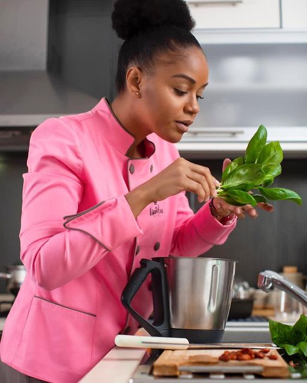

Bem-vindo a minha querida pastelaria, onde a mágia acontece.



Lisandra Pita
5 anos de experiência. Autodidata, Apaixonada por culinária, empreendedora nata,são alguns adjetivos que me descrevem.Em 2016 Criei a Empresa comida Saudável,uma empresa pioneira no ramo da comida Saudável no País. Desde então trabalho Como chef em eventos, consultoria e formação Com grande capacidade para liderar equipas, com muita ambição responsabilidade e grande vontade de alcançar grandes objectivos.
Vários eventos feitos com grande satisfação dos clientes. E parceria na área de restauração.